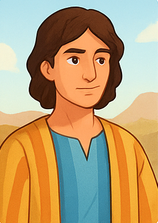

يوسف
🪪
الاسم والمعنى
- بالعربية: يوسف
- بالإنجليزية: Joseph
- بالعبرية: יוֹסֵף (Yosef)
- المعنى: "يزيد" أو "الله يزيد"
⌛
الزمن والخلفية التاريخية
- عاش في زمن الآباء البطاركة (حوالي القرن 18 ق.م).
- ابن يعقوب (إسرائيل) من راحيل.
- كان عايش في كنعان وبعدين انتقل لمصر بسبب الأحداث.
ℹ️
نبذة
- يوسف هو الابن الحادي عشر ليعقوب، والمفضل عند أبيه.
- اتعرض لخيانات قاسية من إخوته لكنه بفضل إيمانه بالله ارتفع في مصر حتى أصبح الرجل الثاني بعد فرعون، وخلّص شعبه من المجاعة.
📜
القصة
- كان محبوب عند أبيه اللي عمل له قميصًا ملونًا.
- رأى أحلام عن ارتفاعه فوق إخوته، مما زاد غيرتهم.
- إخوته باعوه كعبد لتجار متجهين لمصر.
- في بيت فوطيفار، كان أمين لكن اتُهم ظلمًا وسُجن.
- في السجن فسّر أحلام الساقي والخباز، وبعدها حلم فرعون.
- فرعون عيّنه الرجل الثاني في مصر بعد تفسير الحلم.
- جمع القمح في سنين الخير لينقذ مصر والعالم من المجاعة.
- تصالح مع إخوته وجاب عائلته كلها للعيش في مصر.
💡
الصفات الشخصية
- المميزات
- نقي وأمين.
- عنده حكمة وصبر.
- إيمانه بالله قوي جدًا.
-
- الضعفات
- مفيش ضعف واضح ذكره موسي في الكتاب المقدس في سفر التكوين، لكنه أحيانًا كان صريح بأحلامه بشكل أثار غيرة إخوته.
🤲
العلاقة مع الله
- كان بيحس بوجود الله معاه في كل الظروف (العبد، السجن، القصر).
- بيعلن دايمًا أن الله هو صاحب القوة مش هو.
- قال لإخوته: "أنتم قصدتم بي شرًا، أما الله فقصد به خيرًا".
✨
المعجزات أو الأحداث الخارقة
- تفسير الأحلام بإرشاد الله.
- التدبير العجيب اللي خلّاه سبب خلاص لمصر ولعيلته.
📝
الأعداء أو التحديات
- غيرة إخوته وخيانتهم.
- تجربة امرأة فوطيفار.
- السجن ظلمًا.
🌟
الدروس المستفادة
- الله يحوّل الشر للخير.
- الأمانة في الصغيرة بتقود لعظمة في الكبيرة.
- الغفران سرّ الحرية الداخلية.
- الصبر بيفتح طريق المجد.
🟰
الرموز والدلالات
- يوسف يرمز للمسيح:
- اتخان واتظلم من إخوته.
- نزل للسجن ثم ارتفع للمجد.
- صار سبب خلاص للجميع.
📖
الاقتباسات والآيات
- تكوين 39:2: «وَكَانَ الرَّبُّ مَعَ يُوسُفَ، فَكَانَ رَجُلًا نَاجِحًا».
- تكوين 50:20: «أَنْتُمْ قَصَدْتُمْ بِي شَرًّا، أَمَّا اللهُ فَقَصَدَ بِهِ خَيْرًا».
🔗
المصادر
- الكتاب المقدس (سفر التكوين أصحاحات 37–50).
- تفسير القمص تادرس يعقوب ملطي.
- دراسات آباء الكنيسة عن رموز يوسف والمسيح.